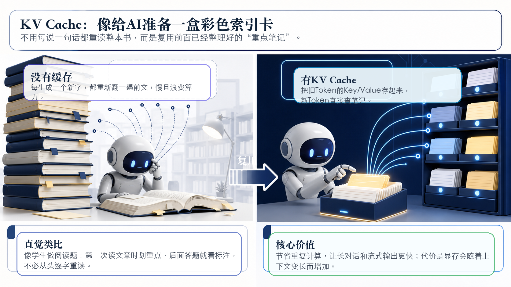
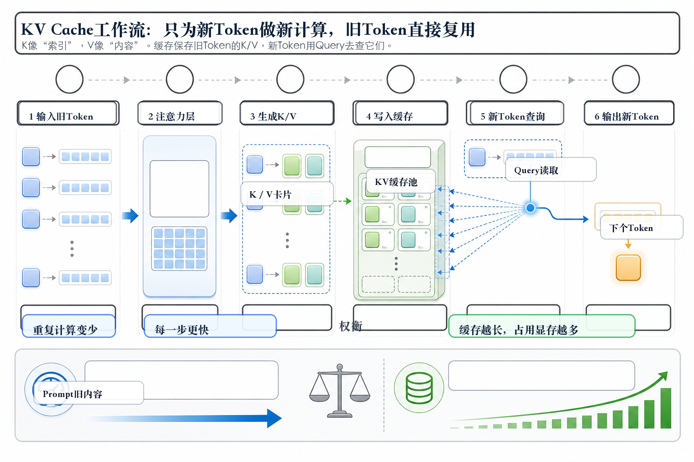

1. 为什么这个概念重要？
如果说 Attention 让大模型学会“看重点”，KV Cache 就是让大模型学会“别把已经看过的重点反复再看一遍”。
大模型生成文字时不是一次性吐出整篇文章，而是像接龙一样：先生成第一个字，再拿着前面的所有内容生成第二个字，然后继续生成第三个字。问题来了：如果每走一步都从头处理一遍完整对话，越到后面越浪费。
没有 KV Cache
AI 每生成一个新 Token，都要重新计算旧 Token 在每一层注意力中的 Key 和 Value。就像每回答一个小问题，都把整本教材重新读一遍。
有 KV Cache
旧 Token 的 Key 和 Value 被保存下来。下一步只需要处理新 Token，并拿它去查询旧内容的缓存笔记。
现实意义：KV Cache 是大模型推理服务的基础设施概念。它影响响应速度、显存成本、服务器能同时服务多少用户，以及长上下文产品是否可用。
2. 一个直观类比：图书馆索引卡
想象你在图书馆写一篇读书报告。老师每问你一个新问题，你都不能只看问题本身，还要参考前面读过的书。
最笨的方法是：每来一个问题，你都从第一页开始重读。这样当然准确，但太慢。聪明的方法是：第一次读的时候，你就把每一段的“主题、人物、线索、重要结论”写成索引卡。后面再回答问题时，你不必重读整本书，只要用新问题去查这些索引卡。

图 1：KV Cache 的直觉类比。旧上下文像已经读过的书，缓存像整理好的索引卡。
大模型的 KV Cache 做的事情非常像这些索引卡。它不是替 AI “记住事实”，而是保存本次对话里每个旧 Token 在注意力机制中已经算好的 Key 和 Value，方便新 Token 直接查询。
3. 工作原理：深入浅出地看一遍
先记住一句话：K 负责“我是谁、别人怎么找到我”，V 负责“找到我以后能拿到什么内容”。

图 2：在生成阶段，旧 Token 的 Key/Value 已经在缓存里，新 Token 只需要生成自己的 Query 并去读取缓存。
关键权衡：KV Cache 不是免费午餐。它减少重复计算，但缓存越长，占用的显存越多。长上下文、多用户并发、超长输出，都会让 KV Cache 成为推理系统里的重要成本项。
4. 关键术语解释
| 术语 | 专业解释 | 白话解释 |
|---|---|---|
| Token | 模型处理文本的基本单位，可以是字、词、词的一部分或符号。 | AI 读文字时用的小块积木。 |
| Attention | 让当前 Token 根据相关性从其他 Token 中读取信息的机制。 | AI 在一堆文字里判断“我现在最该看哪里”。 |
| Query | 当前 Token 发出的查询向量，用来寻找相关信息。 | 像一个问题：“我现在需要哪些线索？” |
| Key | 每个 Token 的索引向量，用来与 Query 匹配。 | 像图书馆书卡上的标签：“别人可以怎么找到我？” |
| Value | 被注意力读取的内容向量，承载可用于生成的信息。 | 像找到书卡后真正拿到的笔记内容。 |
| KV Cache | 在自回归生成中缓存历史 Token 的 Key 和 Value，避免重复计算。 | AI 的“本次对话索引卡盒”。 |
| Prefill | 先处理完整输入提示词，并建立初始 KV Cache 的阶段。 | 先把题干和背景读完，做好标注。 |
| Decode | 模型逐个生成新 Token 的阶段。 | AI 开始一个字一个字往外写答案。 |
| VRAM / 显存 | GPU 上用于存放模型权重、中间结果和缓存的高速内存。 | AI 服务器桌面上的“临时工作台”，越大能摊开的资料越多。 |
5. 一个真实应用案例：ChatGPT 式长对话
你问 AI：“请先解释牛顿三定律，再用篮球比赛做类比。”AI 开始回答时，它已经读过你的问题，并为问题里的每个 Token 建好了缓存。
当它生成“牛顿第一定律……”之后，后面的每一个新 Token 都要参考前文：它刚才说过什么？你的要求是什么？正在讲第一定律还是第二定律？篮球类比是不是还没开始？
KV Cache 的作用：AI 不需要每输出一个字就重新计算整段对话。它把旧上下文的 K/V 保留下来，让新 Token 快速查询。这就是为什么我们能看到答案像打字一样连续流出。
在真实服务里，KV Cache 还会影响“同一台 GPU 能同时服务多少人”。如果每个用户的对话都很长，每个人都会占用一份更大的缓存。于是，推理系统会用各种工程技巧管理缓存，比如分页存储、压缩缓存、限制上下文长度、把不同请求调度到合适的机器上。
6. 常见误区
不对。KV Cache 通常只服务当前生成过程。会话结束、请求结束或缓存被释放后，它就不再是可查询的长期知识库。
不对。缓存会随着上下文变长而占用更多显存。上下文窗口仍然受模型设计、显存、延迟和服务成本限制。
它主要提升推理效率，而不是直接提升理解能力。它让模型少做重复劳动，但不会自动修复幻觉、逻辑错误或知识过期。
不对。RAG 是从外部资料库检索信息；KV Cache 是在一次生成里复用模型内部已经算过的注意力信息。
不一定。更多缓存意味着更多显存占用。工程上真正难的是在速度、成本、并发量和上下文长度之间做平衡。
7. 3句话总结
KV Cache 是大模型生成时的“索引卡盒”：保存旧 Token 的 Key 和 Value，让新 Token 能直接查询。
它的核心价值是用显存换速度，减少重复计算，让长对话和流式输出更可行。
它不是长期记忆，也不是联网搜索；理解它，才能真正看懂大模型推理为什么既快又贵。
8. 复习问题
1. 如果没有 KV Cache，为什么 AI 生成越长的回答会浪费越来越多计算？请用“重读整本书”的类比解释。
2. Key 和 Value 分别像图书馆索引卡里的哪两部分？为什么 Query 需要去匹配 Key？
3. 为什么说 KV Cache 能提高速度，但不能让 AI 拥有无限记忆？请同时说明它带来的成本。
9. 来源与说明
本文以 Transformer 注意力机制、Hugging Face Transformers 缓存文档，以及 PagedAttention 等推理服务研究为事实基础，转写为面向普通读者的中文科普表达。